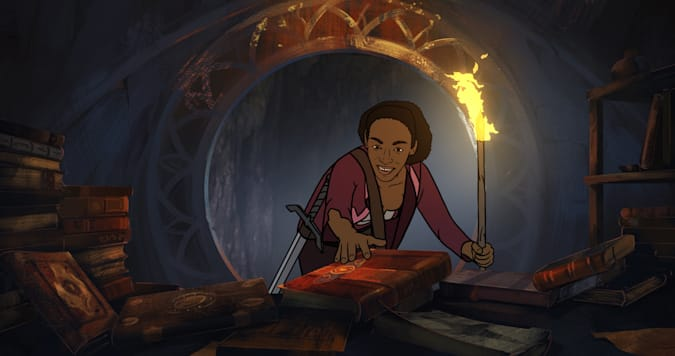

The 2021 film "The Spine of Night" feels like it came from the 1980s, except for the cleaner results of a digital workflow. It follows the style of the works of Ralph Bakshi, specifically "Fire and Ice," with 2D rotoscoped animation being its selling point. It's also inspired by other dark fantasy work. If you think of "The Lord of the Rings," "The Witcher" or "The Game of Thrones," but with extra nudity, sex, violence and blood, you'll know what to expect from this indie picture. Perhaps the closet comparison is that 2007 motion-capture movie adaptation of "Beowulf."I expected a genre film that would make for a decent diversion, but was impressed beyond that. The movie really does stand well against fantasy stories like "The Lord of the Rings." Production choices aside, praise must be given to the writing and the world built here. Sometimes inconsistent, it mostly speaks like a masterful game-master of a tabletop RPG. This might sound like a negative, but it makes the movie for fun and interesting to watch. The directors, also the writers, are clearly geeks for fantasy, and their passion to this original work shines brightly in its words. The setting also feels rather original. Told between a witch queen and a guardian of a magical flower, they speak of how the flower has spread beyond their sacred spot, causing chaos and madness among the humans below. It covers multiple tales, first of the witch's clan in the swamp, chanting naked around a fire with a wreath of the flower providing power, hunted out by the more civilized and arrogant kingdom nearby. Slaughtered, and the flowers taken, its power is used to manipulate and feed greed and fear, across a saga of kingdoms.Perhaps it was the script and writing style that allowed this movie, small and undoubtedly cheap as it was, to attract an impressive voice cast. This includes Richard E. Grant, Lucy Lawless, and Patton Oswalt, to name just a few. The cast is a bit of a hit and miss though. Yes, when it works, they provide gravitas that matches the passion the writers had. But in other cases, the voices don't immediately match what I expect from the character designs, or are simply too recognizable to the point of distraction. Again, I suspect they are fans of the genre as much as the directors are, and had great fun recording, but were able to take part thanks to their sheer excitement and not much more. Alternatively, the soundtrack is impressive, and could have fit perfectly in a Hollywood epic. Visually, the movie uses rotoscope animation, and this partially limits them (or purposely lends to their intention) to realistic and ugly characters. These are not muscular supermodels, but hardy men and women that can withstand the cold and lift a heavy weapon. Much of the cast appears nude, bare breasts, pubic hair and male genitals aplenty. Violence ranges from swords and axes slicing people down, limbs and guts flying, to more grotesque imagery of transforming demoic horror. I shouldn't have to say this, but cartoons aren't all for children, and children should not be allowed near this. But in this setting, it fits, and I think fans of the genre will revel in rather than be disturbed and distracted.But are these realistic, gritty characters and its world good design? It's hard to decide if rotoscope is a cheap shortcut, or an essential method to render this fantasy. Solid outlines and colors make everything look like it were drawn in marker, an incomplete draft of animation from Photoshop where they forgot to add shading. It isn't pretty to view. At best, it lends itself to the creepier, more grotesque scenes, and is otherwise just a platform to complement the script.Whatever one might think of the production values, the passion of the filmmakers, and the quality of the script itself, makes "The Spine of Night" an impressive indie movie in the world of animation. I watched this as part of a film festival series, and I expect it to be a cult classic in film festivals to come.
- "Ani" More reviews can be found at : https://2danicritic.github.io/ Previous review: review_The_Sky_Crawlers Next review: review_The_Swan_Princess